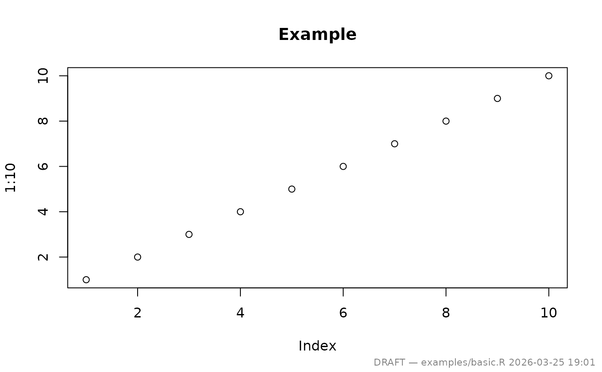
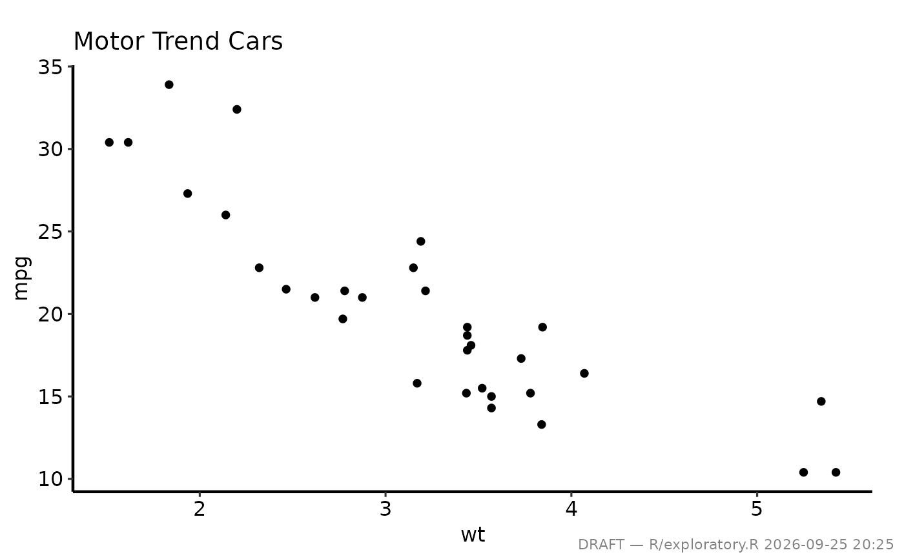
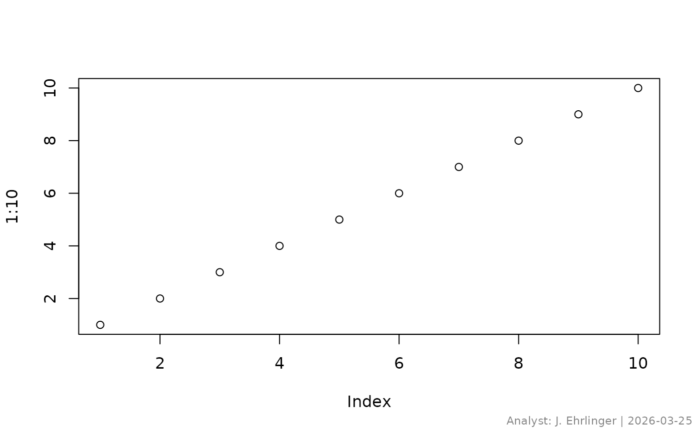

Writes a small text annotation in the bottom-right corner of the current graphics device using grid. Call this after printing or displaying the plot. For publication-ready figures, simply omit the call — the plot is unchanged.
Arguments
- text
Text to display. Defaults to the current working directory, which conveniently identifies the project. For the typical use case pass the script filename:
make_footnote("R/analysis.R").- timestamp
Logical; append
Sys.time()totext? DefaultTRUE. Set toFALSEfor reproducible screenshots or when the file path already contains enough context.- prefix
String prepended to
textbefore the timestamp. Default"DRAFT \u2014 ". Set to""to suppress the prefix.- size
Font size as a multiplier relative to the device default (passed to
grid::gpar()ascex). Default0.7.- colour
Font colour. Default
grey(0.5)(medium grey), which is visually unobtrusive on both screen and print.- x
Horizontal position in normalised parent coordinates (
"npc"). Default1(right edge). Decrease to move left.- y
Vertical position in
"npc". Default0(bottom). Increase to move up.- hjust
Horizontal justification:
"right"(default),"left", or"centre".- vjust
Vertical justification:
"bottom"(default),"top", or"centre".- margin_mm
Margin in mm pulled back from the
x/yposition. Default2.- footnoteText
Equivalent to
textinmake_footnote().- color
Equivalent to
colourinmake_footnote().
Details
Typical workflow:
# During analysis (draft)
p <- hazard_plot(...) + hvti_theme("manuscript")
print(p)
make_footnote("analysis/mortality.R") # adds draft annotation
# For publication — just don't call make_footnote()
ggsave("figures/fig1.pdf", p, width = 11, height = 8.5)Examples
# --- Basic use after a base-R plot ----------------------------------------
plot(1:10, main = "Example")
make_footnote("examples/basic.R")

# --- With a ggplot2 figure and manuscript theme ---------------------------
if (FALSE) { # \dontrun{
library(ggplot2)
p <- ggplot(mtcars, aes(wt, mpg)) +
geom_point() +
labs(title = "Motor Trend Cars") +
hvti_theme("manuscript")
# Draft: print, then annotate
print(p)
make_footnote("R/exploratory.R")
# Publication: save without footnote
ggsave("figures/fig1.pdf", p, width = 11, height = 8.5)
} # }
# --- Custom position and no timestamp ------------------------------------
plot(1:10)
make_footnote("Preliminary results", timestamp = FALSE, prefix = "")

# --- Suppress the DRAFT prefix -------------------------------------------
plot(1:10)
make_footnote(
text = paste("Analyst: J. Ehrlinger |", Sys.Date()),
timestamp = FALSE,
prefix = ""
)
